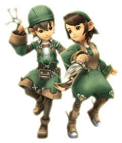

21 |
Beroepen |
 |
Avonturiers kunnen zich in verschillende rollen specialiseren. Deze rollen worden "jobs" (beroepen) genoemd. Aspirant-avonturiers worden krijgslieden ("warriors") wanneer ze voor het eerst een opdracht krijgen.
Naarmate je verder gaat met het spel, zul je kerkers tegenkomen die meer dan lichaamskracht alleen vereisen. Misschien zal je dan sommige avonturiers moeten vragen om van beroep te veranderen. Om van beroep te veranderen, moet de geschikte structuur in het koninkrijk worden gebouwd. Zodra het is gedaan, kun je een opdracht ten verandering van beroep ophangen om de avonturiers bijeen te roepen die geschikt zouden kunnen zijn voor de nieuwe baan. Hieronder zijn de vier beroepen en hun respectieve structuren: |
|
 ●
●  ● White Mage (Witte magiër)
● White Mage (Witte magiër)Genezer bij uitstek, de witte magiër is absoluut noodzakelijk voor een echte groep avonturiers. Om een avonturier in een witte magiër te veranderen, heb je een "White Mage Temple" (een tempel voor witte magiërs) nodig.
| |
 ● Black Mage ( Zwarte magiër)
● Black Mage ( Zwarte magiër)De zwarte magiërs zijn meesters van de elementale magie en kunnen zeer goed vijanden terugdrijven dankzij aanvallende magie. Om een avonturier in een zwarte magiër te veranderen, heb je een "Black Mage Academy" (een academie voor zwarte magiërs) nodig. |

● Thief (Dief)
De dief is een ervaren reiziger maar ook een schatgraver die het slot van die verduivelde kisten kan openmaken. Hij slaagt er ook tersluiks in onnodige gevechten te vermijden. Om een avonturier in dief te veranderen, heb je een "Gaming Hall" (speelzaal) nodig. |
De avonturiers die rond een opdracht ten verandering vergaderen, zullen je vragen of je het wenselijk acht dat zij de rol op zich nemen.
Opgelet: als een avonturier van beroep verandert, zal hij de bekwaamheden verliezen die hij door zijn andere beroep heeft verworven. Denk er dus goed over na alvorens veranderingen aan te brengen. |
 |
 |
 |